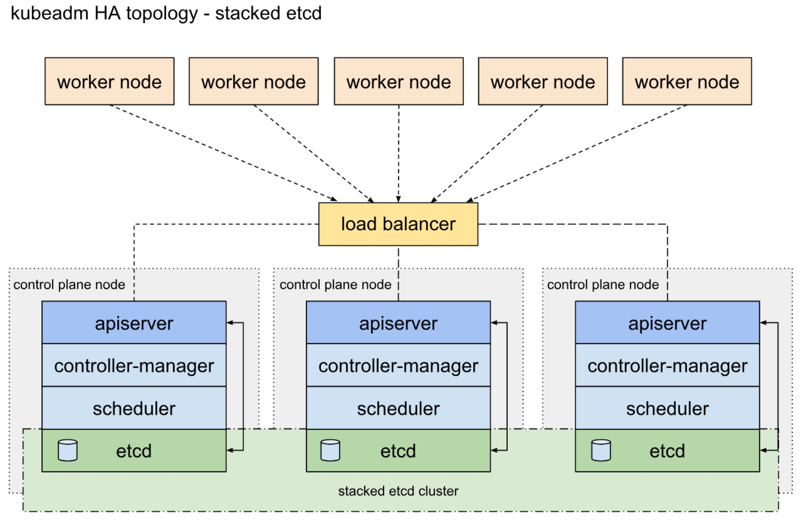
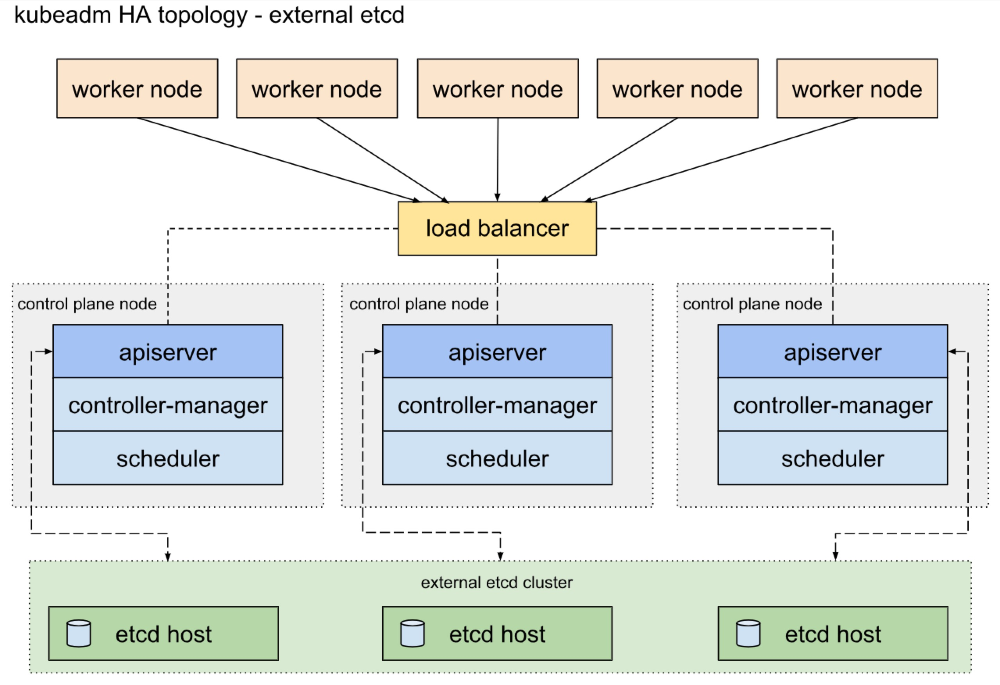

视频课程地址：戳我开始学习
Kubernetes版本选择
Kubernetes 1.14是2019年发布的第一个正式版本。新版本有31个增强功能：其中有10个功能进入了生产可用状态，12个进入了beta版本，另外，增加了7个新功能。1.14版本的主题是可扩展性，支持更多Kubernetes工作负载，其中三个主要功能正式推出，以及一个重要的安全功能转向beta。与之前发布的Kubernetes版本相比，1.14版本中的更多功能逐渐稳定，这是大家期望的重要里程碑。
- 生产级别的Windwos节点支持 Kubernetes1.14版本正式支持将Windows节点添加为工作节点，这意味着可以在生产环境使用Windows容器了，使庞大的Windows应用生态系统能够利用Kubernetes平台的强大功能了。
- Kubectl的更新 新版本Kubectl可以使用声明性Resource Config来管理资源。kubectl的文档也从头进行编写，可参考文档。
- 持久化本地Volumes 本地SSD比远程磁盘能提供更好的性能。对性能要求比较高的数据库和分布式文件系统可以使用久化本地存储。
准备节点
通过kubeadm部署高可用Kubernetes集群有两种架构，一种是将数据平面（etcd集群）和控制平面（Kubernetes控制节点）部署在一起，另一种是分开部署，其中部署在一起可以节省服务器，但是数据平面和控制平面耦合在一起，当一台机器故障时，数据平面和控制平面将同时出现问题。
数据平面和控制平面共用节点：

数据平面和控制平面不共用节点：

我们按照数据平面和控制平面共用节点进行高可用集群的部署。
升级各节点系统
操作系统我们选择 CentOS 7 最新版（7.6.1810），如果不是最新版，可参考如下升级到最新版。
按如下内容，编辑 /etc/yum.repos.d/CentOS-Base.repo
# CentOS-Base.repo
#
# The mirror system uses the connecting IP address of the client and the
# update status of each mirror to pick mirrors that are updated to and
# geographically close to the client. You should use this for CentOS updates
# unless you are manually picking other mirrors.
#
# If the mirrorlist= does not work for you, as a fall back you can try the
# remarked out baseurl= line instead.
#
#
[base]
name=CentOS-$releasever - Base
#mirrorlist=http://mirrorlist.centos.org/?release=$releasever&arch=$basearch&repo=os&infra=$infra
baseurl=http://mirrors.163.com/centos/7.6.1810/os/$basearch/
#baseurl=http://mirror.centos.org/centos/$releasever/os/$basearch/
gpgcheck=1
gpgkey=file:///etc/pki/rpm-gpg/RPM-GPG-KEY-CentOS-7
#released updates
[updates]
name=CentOS-$releasever - Updates
#mirrorlist=http://mirrorlist.centos.org/?release=$releasever&arch=$basearch&repo=updates&infra=$infra
baseurl=http://mirrors.163.com/centos/7.6.1810/updates/$basearch/
#baseurl=http://mirror.centos.org/centos/$releasever/updates/$basearch/
gpgcheck=1
gpgkey=file:///etc/pki/rpm-gpg/RPM-GPG-KEY-CentOS-7
#additional packages that may be useful
[extras]
name=CentOS-$releasever - Extras
#mirrorlist=http://mirrorlist.centos.org/?release=$releasever&arch=$basearch&repo=extras&infra=$infra
baseurl=http://mirrors.163.com/centos/7.6.1810/extras/$basearch/
#baseurl=http://mirror.centos.org/centos/$releasever/extras/$basearch/
gpgcheck=1
gpgkey=file:///etc/pki/rpm-gpg/RPM-GPG-KEY-CentOS-7
#additional packages that extend functionality of existing packages
[centosplus]
name=CentOS-$releasever - Plus
#mirrorlist=http://mirrorlist.centos.org/?release=$releasever&arch=$basearch&repo=centosplus&infra=$infra
baseurl=http://mirrors.163.com/centos/7.6.1810/centosplus/$basearch/
#baseurl=http://mirror.centos.org/centos/$releasever/centosplus/$basearch/
gpgcheck=1
enabled=0
gpgkey=file:///etc/pki/rpm-gpg/RPM-GPG-KEY-CentOS-7
升级系统并重启
$ yum update -y
$ reboot
关闭SELinux，编辑 /etc/sysconfig/selinux，设置SELINUX=disabled
$ setenforce 0
配置内核参数
$ cat <<EOF > /etc/sysctl.d/k8s.conf
net.bridge.bridge-nf-call-ip6tables = 1
net.bridge.bridge-nf-call-iptables = 1
net.ipv4.ip_forward = 1
vm.swappiness = 0
EOF
$ sysctl --system
Kubernetes v1.8+ 要求关闭系统 Swap，请在所有节点利用以下指令关闭：
$ swapoff -a && sysctl -w vm.swappiness=0
$ vi /etc/fstab
注释swap相关的行
设置各节点主机名：
hostnamectl set-hostname k8s-m1
hostnamectl set-hostname k8s-m2
hostnamectl set-hostname k8s-m3
hostnamectl set-hostname k8s-s1
hostnamectl set-hostname k8s-s2
修改hosts，添加如下行：
172.16.10.48 k8s-m001
172.16.10.49 k8s-m002
172.16.10.50 k8s-m003
172.16.10.51 k8s-s001
172.16.10.52 k8s-s002
172.16.10.53 k8s-s002
配置所有节点加载ipvs相关模块（kube-proxy 使用ipvs模式）
加载相关内核模块
$ cat > /etc/sysconfig/modules/ipvs.modules << EOF
#!/bin/bash
modprobe -- ip_vs
modprobe -- ip_vs_rr
modprobe -- ip_vs_wrr
modprobe -- ip_vs_sh
modprobe -- nf_conntrack_ipv4
EOF
$ chmod 755 /etc/sysconfig/modules/ipvs.modules && bash /etc/sysconfig/modules/ipvs.modules && lsmod | grep -e ip_vs -e nf_conntrack_ipv4
安装相关软件包
$ yum install -y ipset ipvsadm
配置ssh key认证
在主节点1上执行生成公钥
$ ssh-keygen
拷贝 /root/.ssh/id_rsa.pub 内容到主节点2和主节点3上
$ vi /home/centos/.ssh/authorized_keys
所有节点安装 Docker
推荐安装 1.13.1, 17.03, 17.06, 17.09, 18.06, 18.09，但是18.09+是未经测试的，不推荐使用。
安装依赖包
$ yum install -y yum-utils \
device-mapper-persistent-data \
lvm2
添加docker yum仓库
$ yum-config-manager \
--add-repo \
https://mirrors.aliyun.com/docker-ce/linux/centos/docker-ce.repo
安装 Docker
yum install -y docker-ce docker-ce-cli containerd.io
配置 Docker
$ cat << EOF > /etc/docker/daemon.json
{
"insecure-registry": [
"hub.hipstershop.cn",
"reg.hipstershop.cn"
],
"registry-mirror": "https://q00c7e05.mirror.aliyuncs.com",
"graph": "/data1/docker"
}
EOF
启动Docker
systemctl enable docker && systemctl start docker
所有节点安装kubeadm, kubelet and kubectl
kubelet版本要与待安装的Kubernetes版本相同，否则可能会出现一些难以预料的问题。
$ cat <<EOF > /etc/yum.repos.d/kubernetes.repo
[kubernetes]
name=Kubernetes
baseurl=http://mirrors.aliyun.com/kubernetes/yum/repos/kubernetes-el7-x86_64
enabled=1
gpgcheck=0
repo_gpgcheck=0
gpgkey=http://mirrors.aliyun.com/kubernetes/yum/doc/yum-key.gpg
http://mirrors.aliyun.com/kubernetes/yum/doc/rpm-package-key.gpg
EOF
通过 yum 安装软件包
yum install -y kubelet kubeadm kubectl --disableexcludes=kubernetes
设置开机自动启动kubelet
systemctl enable kubelet.service
使用kubeadm创建高可用集群（数据平面和控制平面放置到一起）
创建第一个节点控制节点
创建配置文件 kubeadm-config.yaml：
apiVersion: kubeproxy.config.k8s.io/v1alpha1
kind: KubeProxyConfiguration
mode: "ipvs"
---
apiVersion: kubeadm.k8s.io/v1beta1
kind: ClusterConfiguration
kubernetesVersion: v1.14.3
apiServer:
certSANs:
- "apiserver.hipstershop.cn"
- "172.16.1.50"
- "172.16.10.48"
- "172.16.10.49"
- "172.16.10.50"
extraArgs:
allow-privileged: "true"
feature-gates: "VolumeSnapshotDataSource=true,CSINodeInfo=true, CSIDriverRegistry=true"
controlPlaneEndpoint: "apiserver.hipstershop.cn:6443"
etcd:
local:
dataDir: /data1/etcd
networking:
# This CIDR is a Canal default. Substitute or remove for your CNI provider.
podSubnet: "10.244.0.0/16"
controllerManager:
extraArgs:
address: 0.0.0.0
scheduler:
extraArgs:
address: 0.0.0.0
imageRepository: gcr.azk8s.cn/google-containers
172.16.1.50 为APIServer的负载均衡IP，6443为负载均衡的端口。如果没有负载均可以通过 HaProxy自行搭建，参见HaProxy负载均衡配置。如果公司有硬件负载均衡如f5、Netscaler等可以直接使用；如果在各云平台可以使用各云平台的负载均衡（如阿里云的SLB）。
如果你不能直接访问gcr.io，需要设置imageRepository: gcr.azk8s.cn/google-containers。
初始化第一个节点
kubeadm init --config=kubeadm-config.yaml
......
[addons] Applied essential addon: CoreDNS
[addons] Applied essential addon: kube-proxy
Your Kubernetes master has initialized successfully!
To start using your cluster, you need to run the following as a regular user:
mkdir -p $HOME/.kube
sudo cp -i /etc/kubernetes/admin.conf $HOME/.kube/config
sudo chown $(id -u):$(id -g) $HOME/.kube/config
You should now deploy a pod network to the cluster.
Run "kubectl apply -f [podnetwork].yaml" with one of the options listed at:
https://kubernetes.io/docs/concepts/cluster-administration/addons/
You can now join any number of machines by running the following on each node
as root:
kubeadm join apiserver.hipstershop.com:6443 --token skvqhu.b297uimw0omi26w0 --discovery-token-ca-cert-hash sha256:b3b23ae7aea87baa02eda31f7fdbd2604e4cfa20a9f9c278671816d630f30d22
注意：以上(kubeadm join)输出在其他节点加入时会使用，需要妥善保管
配置网络节点
在此选择Canal网络组件，其他网络组建见：https://kubernetes.io/docs/setup/independent/create-cluster-kubeadm/
$ mkdir -p $HOME/.kube
$ cp -i /etc/kubernetes/admin.conf $HOME/.kube/config
$ chown $(id -u):$(id -g) $HOME/.kube/config
$ kubectl apply -f https://docs.projectcalico.org/v3.3/getting-started/kubernetes/installation/hosted/canal/rbac.yaml
$ kubectl apply -f https://docs.projectcalico.org/v3.3/getting-started/kubernetes/installation/hosted/canal/canal.yaml
等待第一个节点 pod 都变为运行状态
kubectl get pod -n kube-system
NAME READY STATUS RESTARTS AGE
canal-xp9tm 3/3 Running 0 79s
coredns-86c58d9df4-d62mw 1/1 Running 0 2m37s
coredns-86c58d9df4-wq26g 1/1 Running 0 2m37s
etcd-k8s-m1.novalocal 1/1 Running 0 2m3s
kube-apiserver-k8s-m1.novalocal 1/1 Running 0 115s
kube-controller-manager-k8s-m1.novalocal 1/1 Running 0 2m21s
kube-proxy-t8x22 1/1 Running 0 2m37s
kube-scheduler-k8s-m1.novalocal 1/1 Running 0 2m12s
复制证书到其他控制节点
USER=centos
CONTROL_PLANE_IPS="172.16.10.49 172.16.10.50"
for host in ${CONTROL_PLANE_IPS}; do
scp /etc/kubernetes/pki/ca.crt "${USER}"@$host:
scp /etc/kubernetes/pki/ca.key "${USER}"@$host:
scp /etc/kubernetes/pki/sa.key "${USER}"@$host:
scp /etc/kubernetes/pki/sa.pub "${USER}"@$host:
scp /etc/kubernetes/pki/front-proxy-ca.crt "${USER}"@$host:
scp /etc/kubernetes/pki/front-proxy-ca.key "${USER}"@$host:
scp /etc/kubernetes/pki/etcd/ca.crt "${USER}"@$host:etcd-ca.crt
scp /etc/kubernetes/pki/etcd/ca.key "${USER}"@$host:etcd-ca.key
scp /etc/kubernetes/admin.conf "${USER}"@$host:
done
登录第二、三个控制节点移动证书到正确位置
USER=centos
mkdir -p /etc/kubernetes/pki/etcd
mv /home/${USER}/ca.crt /etc/kubernetes/pki/
mv /home/${USER}/ca.key /etc/kubernetes/pki/
mv /home/${USER}/sa.pub /etc/kubernetes/pki/
mv /home/${USER}/sa.key /etc/kubernetes/pki/
mv /home/${USER}/front-proxy-ca.crt /etc/kubernetes/pki/
mv /home/${USER}/front-proxy-ca.key /etc/kubernetes/pki/
mv /home/${USER}/etcd-ca.crt /etc/kubernetes/pki/etcd/ca.crt
mv /home/${USER}/etcd-ca.key /etc/kubernetes/pki/etcd/ca.key
mv /home/${USER}/admin.conf /etc/kubernetes/admin.conf
将第二、三个控制节点加入集群
注意：加入集群的命令请使用第一个节点安装完成后生生成的命令。
# 在第二个控制节点执行
$ kubeadm join apiserver.hipstershop.cn:6443 --token skvqhu.b297uimw0omi26w0 --discovery-token-ca-cert-hash sha256:b3b23ae7aea87baa02eda31f7fdbd2604e4cfa20a9f9c278671816d630f30d22 --experimental-control-plane
# 在第三个控制节点执行
$ kubeadm join apiserver.hipstershop.cn:6443 --token skvqhu.b297uimw0omi26w0 --discovery-token-ca-cert-hash sha256:b3b23ae7aea87baa02eda31f7fdbd2604e4cfa20a9f9c278671816d630f30d22 --experimental-control-plane
将从节点加入集群
注意：加入集群的命令请使用第一个节点安装完成后生生成的命令。
# 在s1,s2,s3节点执行
$ kubeadm join apiserver.hipstershop.cn:6443 --token skvqhu.b297uimw0omi26w0 --discovery-token-ca-cert-hash sha256:b3b23ae7aea87baa02eda31f7fdbd2604e4cfa20a9f9c278671816d630f30d22